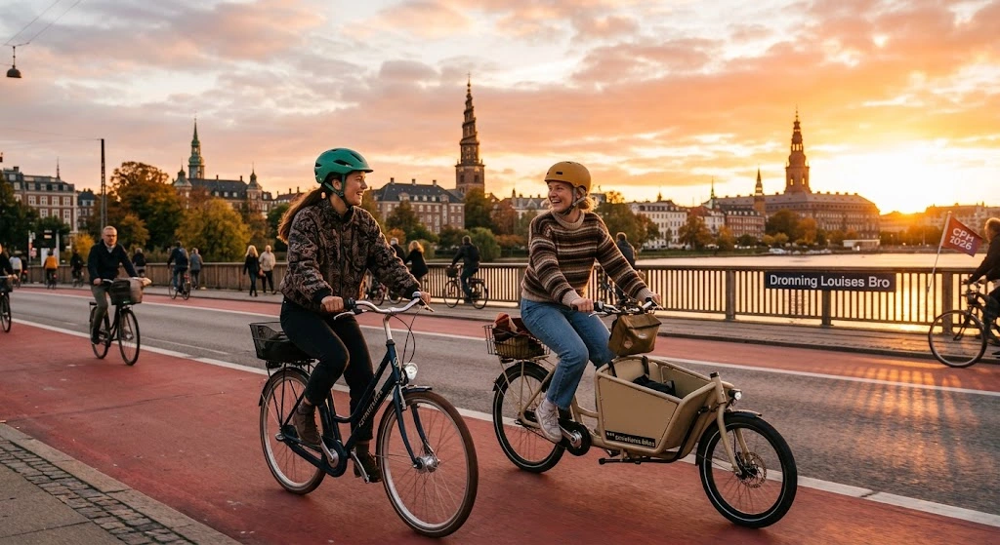
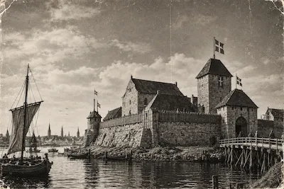
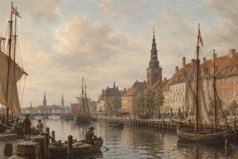
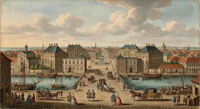
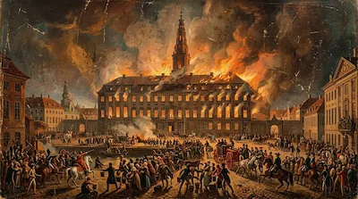
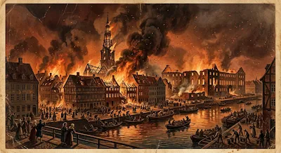
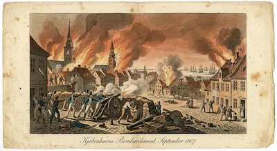
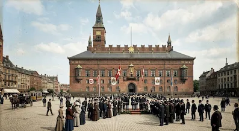

KØBENHAVNS BYGNINGER
Lær byen at kende.

1167
I 1167 blev Absalons borg bygget på en lille ø, hvor København ligger i dag. Borgen blev opført af biskop Absalon for at beskytte området mod angreb. Omkring borgen voksede der efterhånden en by frem. København udviklede sig derfor fra en lille bosættelse til en vigtig handelsby. Året 1167 regnes ofte som Københavns grundlæggelsesår.

2026
I 2026 er København Danmarks hovedstad og en moderne by med mange historiske bygninger. Byen er kendt for sin arkitektur, kultur, cykelstier og livlige byliv. Samtidig findes der stadig mange spor fra Københavns lange historie rundt omkring i byen. København er i dag hjem for mange mennesker og et vigtigt centrum for handel, uddannelse og turisme. Byen fortsætter med at udvikle sig, samtidig med at den bevarer sin historie og kultur.
Kender du de vigtigeste år i Københavns bygnings historie?
Tidslinje
Kirker
Byens kirker fortæller historier om byen gennem deres imponerende arkitektur og lange historie. Fra store, majestætiske kirker til små kirker gemt mellem byens gader findes der mange forskellige steder at gå på opdagelse.
Se flere kirker
Boliger
At bo i København i dag betyder at være tæt på både byliv, natur og kultur. Byen er fyldt med caféer, butikker, parker og mennesker fra mange forskellige steder i verden.
Hvordan bor man i København?
Ikoniskt
København er fyldt med ikoniske bygninger, der viser både byens gamle historie og moderne udvikling. Historiske bygninger står side om side med nyere arkitektur, der giver byen et moderne udtryk.
Byens ikoniske bygningerTidslinje:

1167
Absalons borg
Absalon fik opført en borg på Slotsholmen. Ruinerne findes i dag under Christiansborg. Det er år
1167 man plejer at sige at København blev grundlagt.
Borgen blev senere ødelagt, men København
voksede videre omkring den og blev en vigtig by.

1617
Christianshavn
Christian IV begyndte anlæggelsen af Christianshavn som en befæstet bydel med kanaler og en
planlagt gadestruktur.
Området skulle beskytte København mod angreb fra havet. Christianshavn
blev opført efter hollandsk forbillede med
kanaler, som gjorde det nemt at transportere varer. Bydelen blev også vigtig for Københavns
handel og udvikling.

1749
Frederiksstaden
Frederiksstaden blev planlagt og anlagt med store palæer og monumentale bygninger. Området blev
senere hjemsted for
blandt andet Amalienborg.
Frederiksstaden blev grundlagt i 1749 under kong Frederik V for at
markere 300-året for den oldenborgske kongeslægt. Området blev et symbol på kongemagt og blev
kendt for sin elegante arkitektur.

1794
Christiansborg brænder
Christiansborg Slot brændte, og kongefamilien flyttede derefter til Amalienborg, som blev
kongelig residens.Christiansborg har brændt flere gange og er derfor blevet genopbygget flere
gange.
I dag bruges slottet blandt andet af
Folketinget, regeringen og kongefamilien. De kongelige modtager blandt andet gæster og holder
officielle arrangementer
på slottet.

1795
Den store brand
En stor brand ødelagde dele af København, hvorefter mange nye bygninger blev opført. Branden
startede i 1795 og spredte sig hurtigt gennem byen. Mange huse og bygninger blev ødelagt, og
tusindvis af
mennesker mistede deres hjem.
Efter branden blev de ødelagte områder genopbygget, og flere
bygninger blev opført i en
mere moderne stil. Genopbygningen ændrede Københavns udseende og gav byen nye gader og
bygninger. Branden blev derfor en
vigtig begivenhed i Københavns historie.

1807
Københavns bombardement
I 1807 blev København angrebet af britiske styrker under Napoleonskrigene. Angrebet varede i
flere dage, og briterne
brugte blandt andet raketter og kanoner mod byen. Mange københavnere søgte ly, mens huse, kirker
og andre bygninger blev
ramt.
Efter bombardementet stod København med store skader, som tog lang tid at udbedre.

1905
Københavns Rådhus
Københavns Rådhus blev officielt indviet i 1905. Det blev tegnet af arkitekten Martin Nyrop og er
bygget i
nationalromantisk stil. Rådhuset blev et vigtigt symbol på det moderne København. Bygningen
ligger ved Rådhuspladsen og
blev centrum for byens kommunale administration.
Rådhuset er kendt for sit høje tårn,
sin store
sal og de mange detaljer
i bygningens udsmykning. I dag bruges rådhuset stadig af Københavns Kommune og til forskellige
officielle begivenheder.